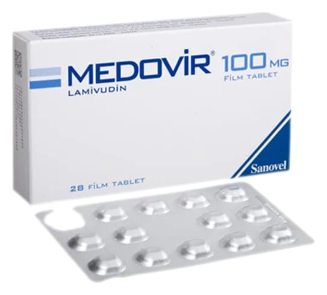

Medovir 100 mg Film Kaplı Tablet, 28 Adet

Ne için kullanılır
KT · Bölüm 1MEDOVĐR lamivudin içeren, hepatit B virüsüne kar ı aktivitesi yüksek antiviral (virüslere kar ı etkili) bir ilaçtır. MEDOVĐR, 28 ve 84 film tablet içeren blister ambalajlardadır. MEDOVĐR, kronik hepatit B’li ve hepatit B virüsü (HBV) ta ıyan 2 ya ve üzeri hastaların tedavisinde kullanılır.